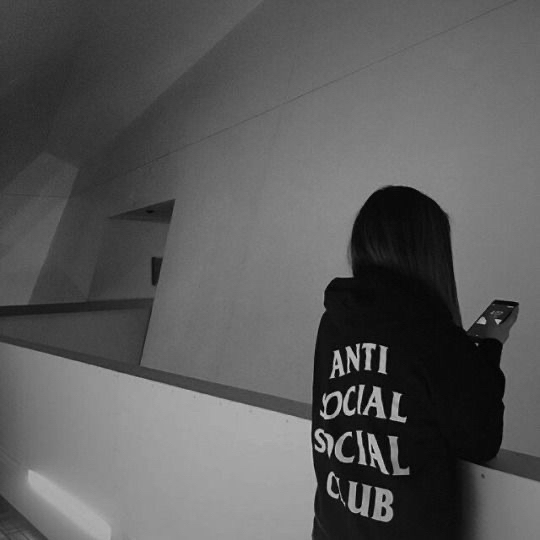
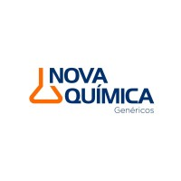

Isabela Oliveira
QA Ultima School
contatooisabela@gmail.com
LinkedIn
Formação Acadêmica
- Analista de Testes de Software (Ultima School) - Atualmente
- Desenvolvimento Web e Aplicações Móveis (IronHack) - 2021
- Design Digital (SAGA) - 2018
Experiencia Profissional
 Assistente Administrativo - Atuei como assistente administrativo para o gerente de vendas da Nova Química Farmacêutica, uma empresa de vendas e fornecimento de medicamentos no Brasil. Meu papel era dar suporte ao gerente e ao departamento de vendas com diversas tarefas, tais como: gerenciamento de chamadas, e-mails, arquivos, relatórios, estoque, comunicação com fornecedores e verificar as vendas de medicamentos. Analisei dados de vendas e criei planilhas do Excel para relatórios.
Habilidades e Competências
Ferramentas de design gráfico:
- Adobe Photoshop- Figma
SDK e Frameworks:
- Visual Studio- Flutter
- Boot Strap
- Spring Boot
Linguagens e tecnologias de programação:
- HTML- CSS
- JavaScript
- MySQL
- APIs